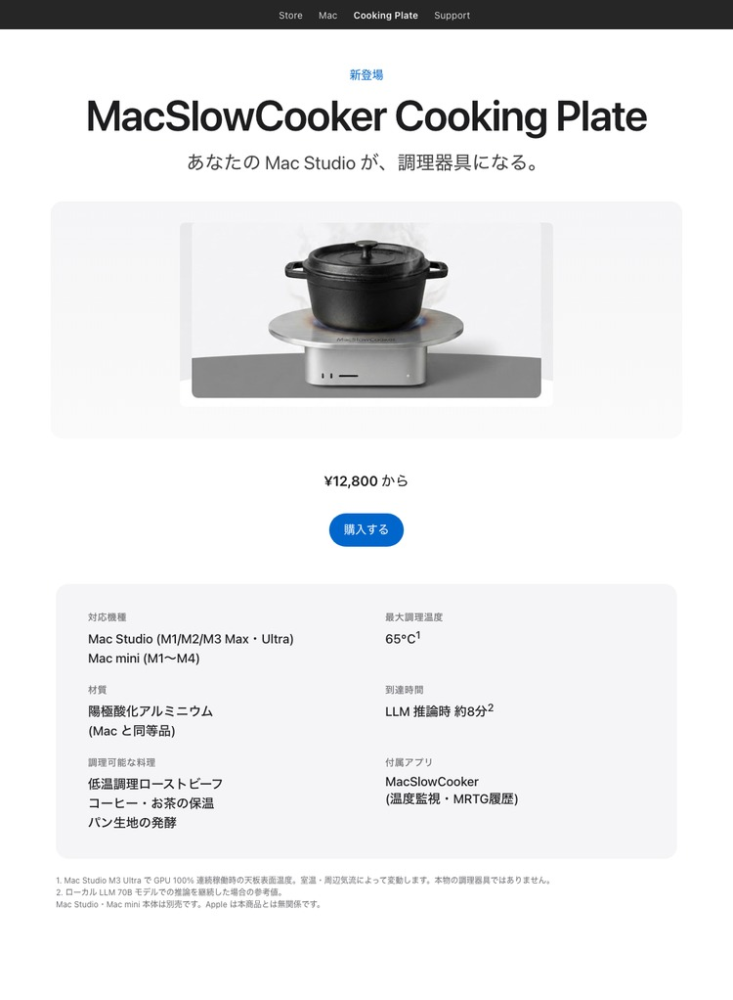

MacSlowCooker Cooking Plate
あなたの Mac Studio が、調理器具になる。

クラスター版

クラスター版 — LLM 学習ラック向け。Mac mini を4台積んで1枚の Cooking Plate。発熱もジョーク強度も4倍。
これはジョークです。MacSlowCooker Cooking Plate は実在する製品でも
アクセサリでも商標でもありません。上の画像は Apple 製品ローンチページのパロディです。
Apple は本コンセプトとは無関係です。
このジョークの出どころ
実在する Mac の Dock 上で GPU 使用率を鍋アイコンとして可視化するアプリ MacSlowCooker を開発中、Mac Studio M3 Ultra でローカル LLM 推論を回していたら本体がそこそこ熱くなって、 「これ、上で本当に料理できるんじゃ?」が何度も頭をよぎった。
その勢いで作ったのがこのコンセプトページ。フル稼働している Mac の発熱を 「キッチン機能」として frame したらどうなるか、というジョーク。**数字は本物、製品は架空**。
本物の数字
- Mac Studio M3 Ultra で GPU 100% 連続稼働時、天板表面は約 65 °C に到達。
- 到達時間: 70B クラスのローカル LLM 推論で約8分。
- Apple の冷却設計は天板を通常の調理温度より十分低く抑える。 低温調理レンジであって、炒めものは無理。
- これらの数値は実在する MacSlowCooker アプリ (Dock アイコン / popup ウィンドウ / MRTG 風 4段履歴ビューワ) でリアルタイム確認できる。
絶対にやらないでください
熱い調理器具・液体・熱に弱いものを稼働中の PC の上に乗せるのは普通に悪手です。 Mac Studio の天板はアルミですが、SoC を熱限界以下に保つには空気の流れが重要で、 塞ぐと寿命が縮みます。当然 Apple の保証対象外。
関連リンク
- MacSlowCooker (GitHub) — 実在のアプリ本体、Apache 2.0
- 「GPU で料理しよう。MacSlowCooker」 — 開発全体の解説記事 (Zenn)
- MacSlowCooker サポートページ